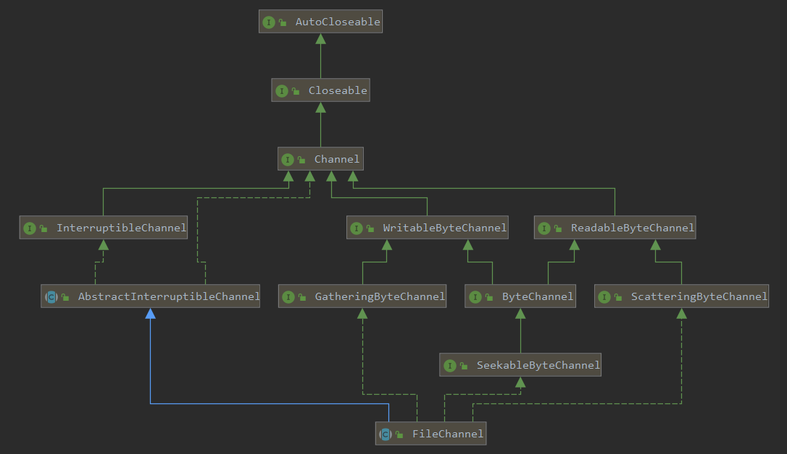
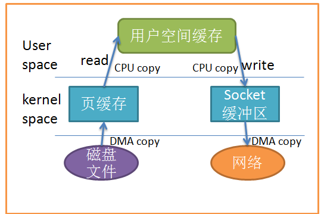
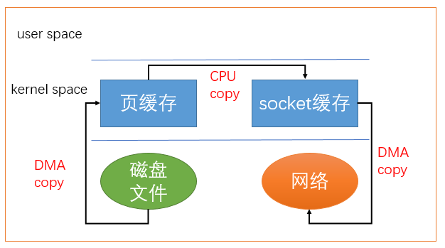
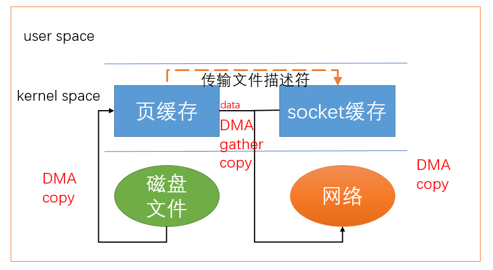
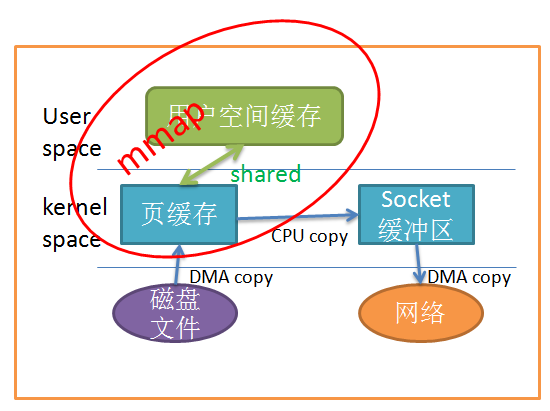
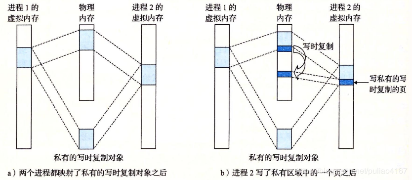

目录
NIO-概览
NIO-Buffer
NIO-Channel
NIO-Channel接口分析
NIO-SocketChannel源码分析
NIO-FileChannel源码分析
本来是想学习Netty的，但是Netty是一个NIO框架，因此在学习netty之前，还是先梳理一下NIO的知识。通过剖析源码理解NIO的设计原理。
本系列文章针对的是JDK1.8.0.161的源码。
上一篇对SocketChannel的源码进行了分析，本篇继续对FileChannel的源码进行解析。
我们可以通过使用RandomAccessFile读写数据。也可以通过FileInputStream读数据或通过FileOutputStream写数据。但实际这三个类内部实际是一样的，我们就以RandomAccessFile为例子说明FileChannelImpl的实现。
RandomAccessFile实现了DataInput和DataOutput两个接口，即数据输入和输出接口。
public class RandomAccessFile implements DataOutput, DataInput, Closeable {
}DataInput定义了一些基本的读取方法
\r会丢弃，读取到\n会丢弃并停止继续读取。
public interface DataInput {
void readFully(byte b[]) throws IOException;
void readFully(byte b[], int off, int len) throws IOException;
int skipBytes(int n) throws IOException;
XXX readXXX() throws IOException;
String readLine() throws IOException;
String readUTF() throws IOException;
}DataOutput定义了一些基本的写方法
public interface DataOutput {
void write(int b) throws IOException;
void write(byte b[]) throws IOException;
void write(byte b[], int off, int len) throws IOException;
void writeXXX(XXX v) throws IOException;
void writeUTF(String s) throws IOException;
}在创建RandomAccessFile我们需要传入两个参数：第一个是文件路径，第二个是文件访问方式。
public RandomAccessFile(String name, String mode)
throws FileNotFoundException
{
this(name != null ? new File(name) : null, mode);
}
public RandomAccessFile(File file, String mode)
throws FileNotFoundException
{
//File用于检查文件路径是否有效
String name = (file != null ? file.getPath() : null);
int imode = -1;
//判断文件访问方式
if (mode.equals("r"))
imode = O_RDONLY;
else if (mode.startsWith("rw")) {
imode = O_RDWR;
rw = true;
if (mode.length() > 2) {
if (mode.equals("rws"))
imode |= O_SYNC;
else if (mode.equals("rwd"))
imode |= O_DSYNC;
else
imode = -1;
}
}
if (imode < 0)
throw new IllegalArgumentException("Illegal mode \"" + mode + "\" must be one of \"r\", \"rw\", \"rws\", or \"rwd\"");
//检查读写权限
SecurityManager security = System.getSecurityManager();
if (security != null) {
security.checkRead(name);
if (rw) {
security.checkWrite(name);
}
}
if (name == null) {
throw new NullPointerException();
}
if (file.isInvalid()) {
throw new FileNotFoundException("Invalid file path");
}
fd = new FileDescriptor();
fd.attach(this);
path = name;
open(name, imode);
}Nul(/u0000)。| 模式 | 说明 |
|---|---|
| r | 以只读方式打开。调用结果对象的任何 write 方法都将导致抛出 IOException。 |
| rw | 打开以便读取和写入。如果该文件尚不存在，则尝试创建该文件。 |
| rwd | 打开以便读取和写入，这点和rw的操作完全一致，但是只会在cache满或者调用RandomAccessFile.close()的时候才会执行内容同步操作。 |
| rws | 在"rwd"的基础上对内容同步的要求更加严苛，每write修改一个byte都会直接修改到磁盘中。 |
SecurityManager检查读写文件权限通过getChannel可以获取文件通道，进行文件读写。
public final FileChannel getChannel() {
synchronized (this) {
if (channel == null) {
channel = FileChannelImpl.open(fd, path, true, rw, this);
}
return channel;
}
}通过FileChannelImpl.open创建一个FileChannelImpl实例。

在FileDispatcherImpl静态构造函数中会调用IOUtil.load()，在上一章详细介绍过。
static {
IOUtil.load();
}
private FileChannelImpl(FileDescriptor fd, String path, boolean readable, boolean writable, boolean append, Object parent)
{
this.fd = fd;
this.readable = readable;
this.writable = writable;
this.append = append;
this.parent = parent;
this.path = path;
//创建nd用于调用native方法进行读写
this.nd = new FileDispatcherImpl(append);
}
public int write(ByteBuffer src) throws IOException {
ensureOpen();
if (!writable)
throw new NonWritableChannelException();
synchronized (positionLock) {
int n = 0;
int ti = -1;
try {
begin();
//将当前线程加入到线程集合中，当Channel关闭时，可以发送信号给线程，避免线程被I/O阻塞住
ti = threads.add();
if (!isOpen())
return 0;
do {
//写数据
n = IOUtil.write(fd, src, -1, nd);
} while ((n == IOStatus.INTERRUPTED) && isOpen());
return IOStatus.normalize(n);
} finally {
//I/O完成移除线程
threads.remove(ti);
end(n > 0);
assert IOStatus.check(n);
}
}
}begin开始I/O操作end收尾工作将线程移除线程集合中
关于begin和end操作可以看《NIO-Channel接口分析》
threads是一个NativeThreadSet类型，它用于存放native线程的唯一token。
class NativeThreadSet {
private long[] elts;
...
int add() {
long th = NativeThread.current();
...
//数组不够长会先扩容
...
for (int i = start; i < elts.length; i++) {
//未使用过，则设置当前的线程token值
if (elts[i] == 0) {
elts[i] = th;
used++;
return i;
}
}
...
}
void remove(int i) {
synchronized (this) {
//清空
elts[i] = 0;
used--;
//当调用了signalAndWait等待时会设置为true。此时会激活每个线程，并清理，每个线程都会被移除。当全部移除后激活调用signalAndWait的线程
if (used == 0 && waitingToEmpty)
//通知
notifyAll();
}
}
//通知并等待
synchronized void signalAndWait() {
boolean interrupted = false;
while (used > 0) {
int u = used;
int n = elts.length;
for (int i = 0; i < n; i++) {
long th = elts[i];
...
//激活线程
NativeThread.signal(th);
...
}
//是否等待所有线程被移除
waitingToEmpty = true;
try {
//等待线程被清理,所有线程被移除时会激活。最多等待50ms，防止线程被阻塞。
wait(50);
} catch (InterruptedException e) {
interrupted = true;
} finally {
waitingToEmpty = false;
}
}
//线程中断则调用中断处理操作
if (interrupted)
Thread.currentThread().interrupt();
}
}native线程被定义为NativeThread类型的对象，主要由于在linux等操作系统当线程被I/O操作阻塞时，channel释放并不会激活该线程，因此需要通过一种通知的机制，在channel关闭时对线程进行通知，以便激活线程。
threads.add();会获取当前native的线程token，并加入待NativeThreadSet的token数组中(若数组长度不够，则会进行扩容。)
在上一章详细将结果IOUtil.write这里就不重复说明了
和写文件步骤类似，调用IOUtil.read读取数据
public int read(ByteBuffer dst) throws IOException {
...
n = IOUtil.read(fd, dst, -1, nd);
...
}
public FileChannel position(long newPosition) throws IOException {
...
p = position0(fd, newPosition);
...
}public long size() throws IOException {
...
s = nd.size(fd);
...
}截取文件的长度，超过的文件内容会被删除。
public FileChannel truncate(long newSize) throws IOException {
...
int rv = -1;
long p = -1;
int ti = -1;
...
// 获取当前长度
long size = nd.size(fd);
...
// 获取当前位置
p = position0(fd, -1);
...
// 若当前长度大于截取的长度，则截取
if (newSize < size) {
...
rv = nd.truncate(fd, newSize);
...
}
//若当前位置大于截取的长度则修改当前位置
if (p > newSize)
p = newSize;
...
rv = (int)position0(fd, p);
...
}写文件若没有采用直接缓冲区，则会先写入到页缓冲区中，通过force可以将尚未写入磁盘的数据强制写道磁盘上。
public void force(boolean metaData) throws IOException {
...
rv = nd.force(fd, metaData);
...
}若需要将一个通道的数据写入到另一个通道，则可以使用transferTo或transferFrom
若当前通道是FileChannel，则可以将当前通道数据通过transferTo写入到其他通道
public long transferTo(long position, long count, WritableByteChannel target) throws IOException
{
...
//当前文件大小
long sz = size();
if (position > sz)
return 0;
int icount = (int)Math.min(count, Integer.MAX_VALUE);
//可传大小修正
if ((sz - position) < icount)
icount = (int)(sz - position);
long n;
// 若内核支持则使用直接传输
if ((n = transferToDirectly(position, icount, target)) >= 0)
return n;
// 尝试内存映射文件传输
if ((n = transferToTrustedChannel(position, icount, target)) >= 0)
return n;
// 慢速传输
return transferToArbitraryChannel(position, icount, target);
}通常情况下我们要将一个通道的数据传到另一个通道。举个例子，从一个文件读取数据通过socket通道进行发送。比如通过http协议读取服务器上的一个静态文件。

当我们通过transferTo在通道之间数据传输时，若内核支持，则会使用零拷贝的方式传输数据。
通过零拷贝技术可以避免将数据拷贝到用户空间中。

若底层硬件支持的话可以将读取到的内核缓冲区的文件描述符加到socket缓冲区中，就可以省去了内核中将数据拷贝到socket缓冲区这一个内存拷贝动作。
使用直接传输时，只能从文件通道传输到网络通道。

private long transferToDirectly(long position, int icount, WritableByteChannel target) throws IOException
{
if (!transferSupported)
return IOStatus.UNSUPPORTED;
//做一些校验，当前和目标通道是否都支持直接传输
...
targetFD = ((SelChImpl)target).getFD();
...
int thisFDVal = IOUtil.fdVal(fd);
int targetFDVal = IOUtil.fdVal(targetFD);
//调用native方法直接传输，若不支持会返回不支持的错误码
n = transferTo0(thisFDVal, position, icount, targetFDVal);
...
}windows不支持
transferTo0
以linux为例，linux会调用sendfile64在两个文件描述符之间传递数据。
Java_sun_nio_ch_FileChannelImpl_transferTo0(JNIEnv *env, jobject this,
jint srcFD,
jlong position, jlong count,
jint dstFD)
{
#if defined(__linux__)
off64_t offset = (off64_t)position;
jlong n = sendfile64(dstFD, srcFD, &offset, (size_t)count);
...
return n;
#elif defined (__solaris__)
...
#elif defined(__APPLE__)
...
#elif defined(_AIX)
...
#else
return IOS_UNSUPPORTED_CASE;
#endif
}sendfile64只支持将文件传输到socket
若内核不支持上述方式则会尝试使用mmap(内存映射文件)的方式传输。

应用程序调用mmap()，磁盘上的数据会通过DMA被拷贝的页缓冲区，接着操作系统会把这段页缓冲区与应用程序共享，这样就不需要把页缓冲区的内容复制到用户空间了。应用程序再调用write(),操作系统直接将页缓冲区的内容拷贝到socket缓冲区中，这一切都发生在内核空间，最后，socket缓冲区再把数据发到网卡去。
private long transferToTrustedChannel(long position, long count, WritableByteChannel target) throws IOException
{
...
//内存映射文件
MappedByteBuffer dbb = map(MapMode.READ_ONLY, position, size);
//有个bug，若在内存映射文件写入到目标通道时，关闭了channel，并不能中断此次写操作。
int n = target.write(dbb);
...
unmap(dbb);
...
}MapMode有三种方式，只读(READ_ONLY)、可读写(READ_WRITE)、写时复制(PRIVATE)。
当多个进程的虚拟内存映射到同一块物理内存时，若不采用写时复制，则由于共用一块物理内存，会相互影响。当使用了写时复制的技术后，一旦一个进程要修改页面时，就会复制一个副本，因此不会影响其他进程。

map(MapMode.READ_ONLY, position, size);
public MappedByteBuffer map(MapMode mode, long position, long size) throws IOException
{
//一些基本校验
...
//获取文件大小
long filesize = nd.size(fd);
...
//根据文件大小设置文件描述符的结束未知
rv = nd.truncate(fd, position + size);
...
int pagePosition = (int)(position % allocationGranularity);
long mapPosition = position - pagePosition;
long mapSize = size + pagePosition;
//调用native进行映射，若此时发生内存溢出，则强制回收一次GC，并重新尝试映射，若还是发生内存溢出则抛出异常
...
addr = map0(imode, mapPosition, mapSize);
...
//创建一个内存映射的文件描述符，指向当前的native文件描述符
FileDescriptor mfd = nd.duplicateForMapping(fd);
int isize = (int)size;
//Unmapper是卸载内存映射文件用的
Unmapper um = new Unmapper(addr, mapSize, isize, mfd);
if ((!writable) || (imode == MAP_RO)) {
return Util.newMappedByteBufferR(isize, addr + pagePosition, mfd, um);
} else {
//创建一个MappedByteBuffer
return Util.newMappedByteBuffer(isize, addr + pagePosition, mfd, um);
}
...
}Unmapper适用于卸载内存映射文件用的。它实现了Runnable接口，以便于线程可以执行移除内存映射以及一些清理工作。
private static class Unmapper implements Runnable
{
...
public void run() {
if (address == 0)
return;
//移除内存映射
unmap0(address, size);
address = 0;
...
// 关闭文件描述符
nd.close(fd);
...
}那么什么时候会进行清理呢，我们可以看到实际通过Util.newMappedByteBuffer创建了一个MapperByteBuffer，并将Unmapper对象进行传递。
接下来看如何创建MapperByteBuffer
static MappedByteBuffer newMappedByteBuffer(int size, long addr, FileDescriptor fd, Runnable unmapper)
{
MappedByteBuffer dbb;
if (directByteBufferConstructor == null)
initDBBConstructor();
try {
dbb = (MappedByteBuffer)directByteBufferConstructor.newInstance(
new Object[] { new Integer(size), new Long(addr), fd, unmapper });
} catch (InstantiationException |
IllegalAccessException |
InvocationTargetException e) {
throw new InternalError(e);
}
return dbb;
}首先通过directByteBufferConstructor创建一个MapperByteBuffer，从命名可以看出来这是一个DirectByteBuffer构造器。
通过反射获取了DirectByteBuffer的构造函数。
private static void initDBBConstructor() {
...
Class<?> cl = Class.forName("java.nio.DirectByteBuffer");
Constructor<?> ctor = cl.getDeclaredConstructor(
new Class<?>[] { int.class, long.class, FileDescriptor.class, Runnable.class });
ctor.setAccessible(true);
directByteBufferConstructor = ctor;
...
}构造函数传递的第五个参数为Unmapper对象，它被传递到了Cleaner中，由此可知，当MapperByteBuffer被释放时，Cleaner可以保证内存映射被卸载。
protected DirectByteBuffer(int cap, long addr, FileDescriptor fd, Runnable unmapper)
{
super(-1, 0, cap, cap, fd);
address = addr;
cleaner = Cleaner.create(this, unmapper);
att = null;
}当内存映射完成时，就可以通过write进行数据传输,传输完成通过ummap卸载内存映射。
private static void unmap(MappedByteBuffer bb) {
Cleaner cl = ((DirectBuffer)bb).cleaner();
if (cl != null)
cl.clean();
}常规传输需要多次内存拷贝以及在用户模式和内核模式切换。
private long transferToArbitraryChannel(long position, int icount, WritableByteChannel target) throws IOException
{
...
//获取临时直接缓冲区
ByteBuffer bb = Util.getTemporaryDirectBuffer(c);
...
//读到bb中
int nr = read(bb, pos);
...
//转换为读模式
bb.flip();
//写入到目标通道
int nw = target.write(bb);
...
//释放临时直接缓冲区
Util.releaseTemporaryDirectBuffer(bb);
}
若要将其他通道的数据传输到文件通道中，可以通过transferFrom传输。
若原通道是文件，则可以通过内存映射文件的方式提高性能。否则使用常规传输方式，需要将数据拷贝到用户空间。
public long transferFrom(ReadableByteChannel src, long position, long count) throws IOException
{
...
if (src instanceof FileChannelImpl)
return transferFromFileChannel((FileChannelImpl)src, position, count);
return transferFromArbitraryChannel(src, position, count);
}private long transferFromFileChannel(FileChannelImpl src, long position, long count) throws IOException
{
...
MappedByteBuffer bb = src.map(MapMode.READ_ONLY, p, size);
//写入到文件
long n = write(bb, position);
...
//释放内存映射
unmap(bb);
...
}private long transferFromArbitraryChannel(ReadableByteChannel src, long position, long count) throws IOException
{
int c = (int)Math.min(count, TRANSFER_SIZE);
//获取临时直接缓冲区
ByteBuffer bb = Util.getTemporaryDirectBuffer(c);
...
//将src写入到临时直接缓存
int nr = src.read(bb);
...
//转换为读模式
bb.flip();
//写入到文件
int nw = write(bb, pos);
...
//释放临时直接缓冲区
Util.releaseTemporaryDirectBuffer(bb);
}在NIO中引入了FileLock实现文件锁，可以实现文件进程锁。它支持独占锁和共享锁。
使用独占锁时，只允许一个线程独占文件，其他线程必须等待独占的线程释放文件锁后才可以占用。使用共享锁时只支持读模式共享文件占用。关于文件锁的使用可以看下《JAVA 文件锁 FileLock》
public FileLock lock(long position, long size, boolean shared) throws IOException
{
...
//写模式不能共享锁
if (shared && !readable)
throw new NonReadableChannelException();
//读模式不能独占锁
if (!shared && !writable)
throw new NonWritableChannelException();
//创建一个文件锁实例
FileLockImpl fli = new FileLockImpl(this, position, size, shared);
//获取文件锁表
FileLockTable flt = fileLockTable();
flt.add(fli);
boolean completed = false;
int ti = -1;
try {
...
//调用native方法加锁
n = nd.lock(fd, true, position, size, shared);
if (isOpen()) {
//部分操作系统不支持共享锁，若获取到的是独占锁，则更新当前FileLockImpl为独占锁
if (n == FileDispatcher.RET_EX_LOCK) {
//若获取到锁，则重新获取一个非共享锁实例
FileLockImpl fli2 = new FileLockImpl(this, position, size, false);
flt.replace(fli, fli2);
fli = fli2;
}
completed = true;
}
} finally {
if (!completed)
//加锁失败，移除锁
flt.remove(fli);
threads.remove(ti);
...
}
return fli;
}关闭文件通道时需要释放所有锁和文件流
protected void implCloseChannel() throws IOException {
// 释放文件锁
if (fileLockTable != null) {
for (FileLock fl: fileLockTable.removeAll()) {
synchronized (fl) {
if (fl.isValid()) {
//释放锁
nd.release(fd, fl.position(), fl.size());
((FileLockImpl)fl).invalidate();
}
}
}
}
// 通知当前通道所有被阻塞线程
threads.signalAndWait();
if (parent != null) {
((java.io.Closeable)parent).close();
} else {
nd.close(fd);
}
}在创建channel的时候会将RandomAccessFile、FileInputStream或FileOutputStream等对象设置为channel的parent。从而使得channel关闭的时候可以释放parent资源。
((java.io.Closeable)parent).close();
public void close() throws IOException {
synchronized (closeLock) {
if (closed) {
return;
}
closed = true;
}
if (channel != null) {
channel.close();
}
//关闭文件描述符
fd.closeAll(new Closeable() {
public void close() throws IOException {
close0();
}
});
}关闭FileDescriptor时会关闭RandomAccessFile、FileInputStream或FileOutputStream等资源。在创建RandomAccessFile时会通过FileDescriptor.attach将RandomAccessFile添加到FileDescriptor的otherParents中
synchronized void closeAll(Closeable releaser) throws IOException {
if (!closed) {
closed = true;
IOException ioe = null;
//在try执行完后调用releaser的close方法
try (Closeable c = releaser) {
//在创建RandomAccessFile时会把RandomAccessFile对象添加到otherParents中
if (otherParents != null) {
for (Closeable referent : otherParents) {
...
referent.close();
...
}
}
...
}
}本篇对文件通道常用的操作源码进行解析，对linux下的零拷贝进行简要说明。
微信扫一扫二维码关注订阅号杰哥技术分享
出处：https://www.cnblogs.com/Jack-Blog/p/12078767.html
作者：杰哥很忙
本文使用「CC BY 4.0」创作共享协议。欢迎转载，请在明显位置给出出处及链接。